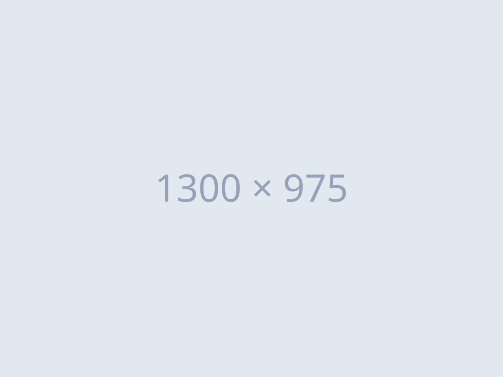
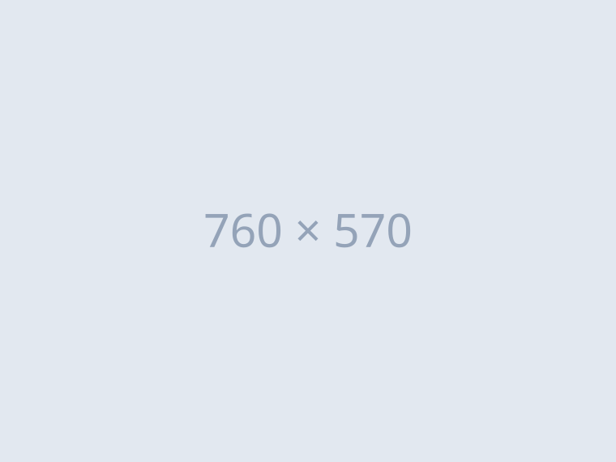

Draftmango Engineering: we engineer the things cities run on

We engineer the things cities run on.
Bridges, rail, water and energy — designed, built and maintained by one team since 1968.

Clean water for 240 million litres a day.
New clarifiers and filters at Aldermoor serve half a million homes, upgraded without a single day off supply.
Project 01 of 03
-
Projects
3,100+
delivered since 1968
-
Years
58
of building, from Glasgow
-
People
9,400
engineers and builders
-
LTIR
0.08
lost-time injury rate, 2025
Sheet 03 / 10Markets
Where we build.
-
01
Transport
Bridges, highways, rail and the stations between them.
1,140 projects

-
02
Water
Treatment works, reservoirs and the networks that carry them.
620 projects
-
03
Energy
Wind, solar, storage and the grid connections behind them.
480 projects
-
04
Buildings
Hospitals, campuses and civic buildings, designed to last.
560 projects
-
05
Industrial
Plants and production sites engineered to run without pause.
300 projects
One team from first sketch to last inspection.
-
01
Advisory & Planning
Feasibility, consents and the business case, before a line is drawn.
Learn More about Advisory & Planning -
02
Design & Engineering
Civil, structural and systems design, modelled as one digital twin.
Learn More about Design & Engineering -
03
Construction
Our own crews and supply chain, delivering safely to programme.
Learn More about Construction -
04
Operations & Maintenance
Inspection, upkeep and upgrades for decades after handover.
Learn More about Operations & Maintenance
Sheet 05 / 10Projects
Featured projects.
From brownfield to station in 38 months.
 2022 · Site
2025 · Station
2022 · Site
2025 · Station
Sheet 07 / 10Safety & Quality
Everyone home safe, every day.
Safety is planned into every drawing, not added on site.
- ISO 9001
- ISO 14001
- ISO 45001
-
41M
safe hours worked since 2021
-
0.08
lost-time injury rate, 2025
-
100%
of sites certified to ISO 45001
-
12,600
safety observations logged in 2025


Build a career on solid ground.
380
graduate and apprentice places a year
From the drawing office.
All Insights-

I-14Digital
What Digital Twins Change on Site
6 min read
-
I-13Bridges
Designing Bridges for a Hotter Century
8 min read
-
I-12Rail
Modular Stations: Lessons From Northgate
5 min read